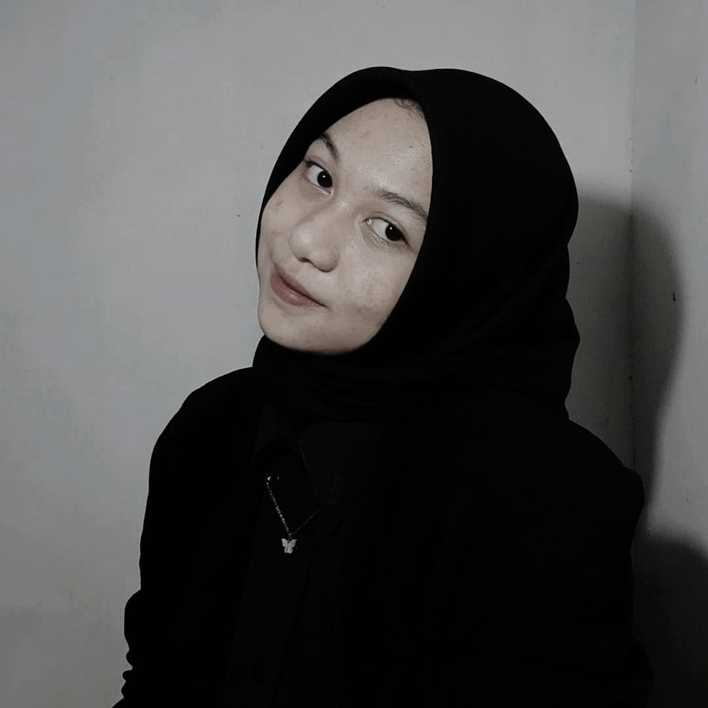

Olivia A. Hrp
Tanggal Lahir : 3 Januari 2007
Alamat : Jl. Flora V No. 55 Komp. Kejaksaan Medan
Email : olivelaolivnxm@gmail.com
Telepon : 0812 6210 3883
Tanggal Lahir : 3 Januari 2007
Alamat : Jl. Flora V No. 55 Komp. Kejaksaan Medan
Email : olivelaolivnxm@gmail.com
Telepon : 0812 6210 3883
Hallo, nama saya Olivia Azzahra Harahap. Saya merupakan siswi kelas XII RPL 4 di SMKN 9 Medan. Saya menyukai jurusan Rekayasa Perangkat Lunak karena bagi saya jurusan ini mengantarkan saya ke masa depan yang cerah dan dapat menjamin kehidupan. Saya memiliki minat tinggi dalam mengembangkan teknologi, terutama bidang Software. Saya mulai mempersiapkan diri untuk berkarir di dunia IT.